01 · 必去景点
必去景点逐个安排
市区景点适合夜景和 City Walk；滨海这版拆成航母乐园和国家海洋博物馆两天，靠亲友开车接送更舒服。
津湾广场与解放桥
天津站出站第一眼的城市名片。建议黄昏到蓝调时段拍照，顺手把世纪钟、海河对岸的欧式建筑群一起收进画面。
意大利风情街
从解放桥沿河步行或打车都方便。下午适合看砖红色建筑，晚上灯亮后适合接海河夜游。
海河游船夜游
2026 年试运营信息显示，津湾码头、永乐码头夜景游覆盖 19:30 到 21:30 左右班次，常见航线在天津之眼至解放桥之间往返，全程约 50 分钟。
滨海航母乐园
以真实退役航母“基辅号”为核心，适合军事主题、亲子和大型装备拍照。位置偏滨海，建议和国家海洋博物馆同日游。
民园广场与五大道
五大道看的是近代洋楼和街巷尺度，春季适合赏花。路线建议从民园广场进入，串成都道、重庆道、睦南道。
天津之眼摩天轮
建在永乐桥上的海河地标。若想登舱，优先约夜间票；若只拍照，金刚桥和三岔河口一带视角更稳。
国家海洋博物馆
被称为“海上故宫”。常规开放信息为 9:00 到 17:00，16:30 停止入馆，周一闭馆，节假日以官方公告为准。
02 · 晚间项目
想听相声，提前 1 到 2 周预约
相声适合替换天津之眼登舱或部分夜间散步；可在微信/票务小程序里搜索剧场名称在线预约，热门场次不建议当天临时订。
轻松好笑
葫芦相声社·乐呵兄弟
地址在城厢东路与北马路交口龙亭家园 12 号楼 1 门 201，靠近鼓楼、古文化街和天津之眼一线，适合安排成夜间加餐。
- 适合：想离古文化街、天津之眼近一些，动线更顺。
- 提醒：周末和节假日提前在微信/携程等小程序搜索“葫芦相声社”在线预约，现场临时买票不稳。

03 · 美食与餐馆
每道菜匹配顺路餐馆
天津菜分量普遍大，双人建议每顿 2 到 3 个菜就够。餐馆名都做成大众点评移动链接，微信里点开后优先进入点评页。
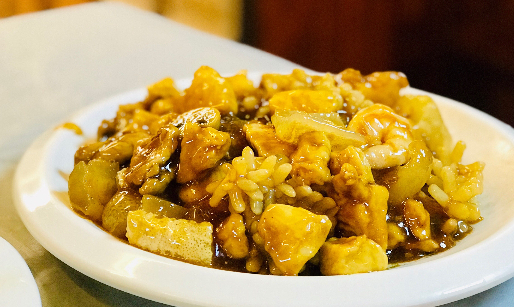
八珍豆腐
外酥里嫩的豆腐裹上海鲜和浓芡，最适合作为五大道午餐主菜。
桂园餐厅(五大道店)
成都道 62 号，靠近民园广场；高德 2025 美食榜把它列为津菜代表，Trip.com 页面也把八珍豆腐列为热门餐点。
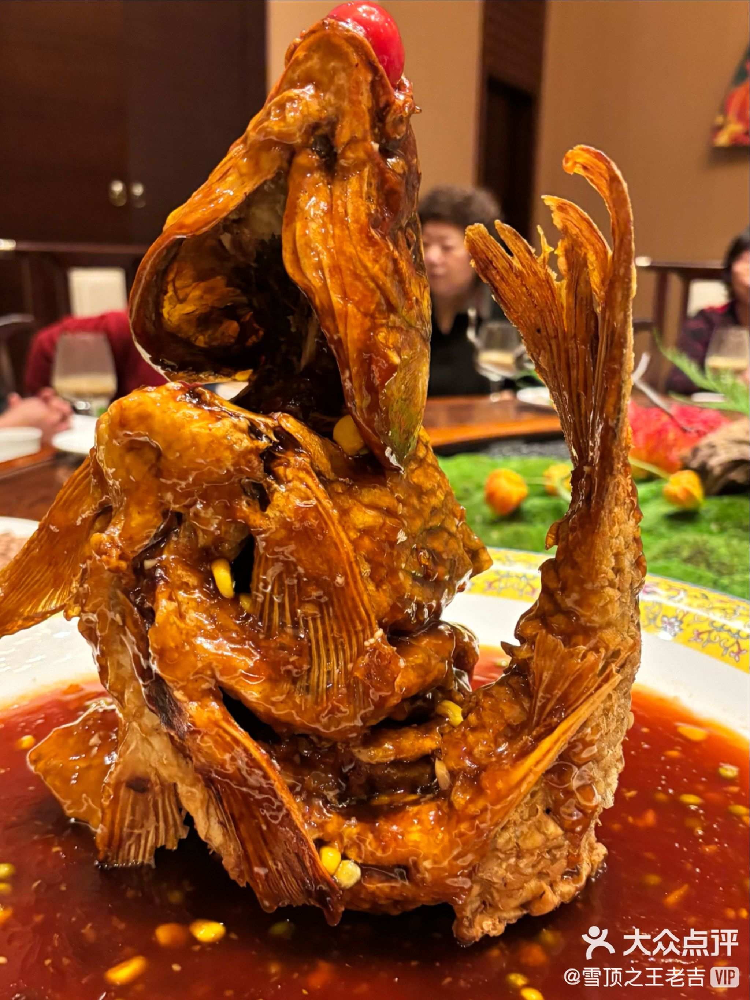
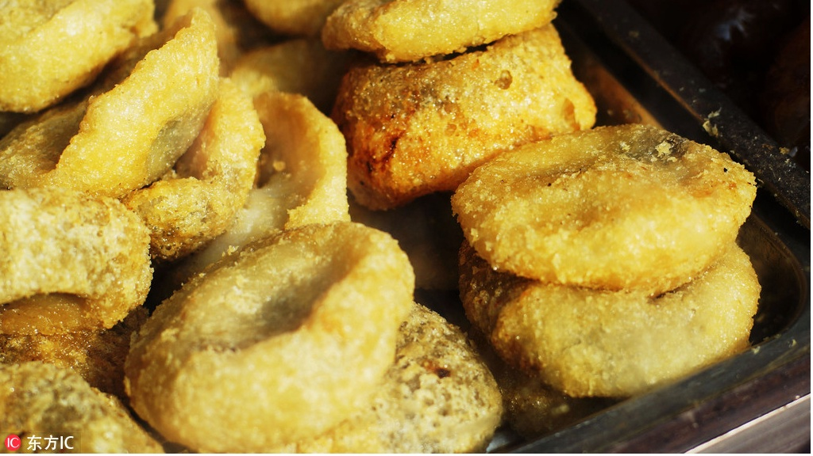
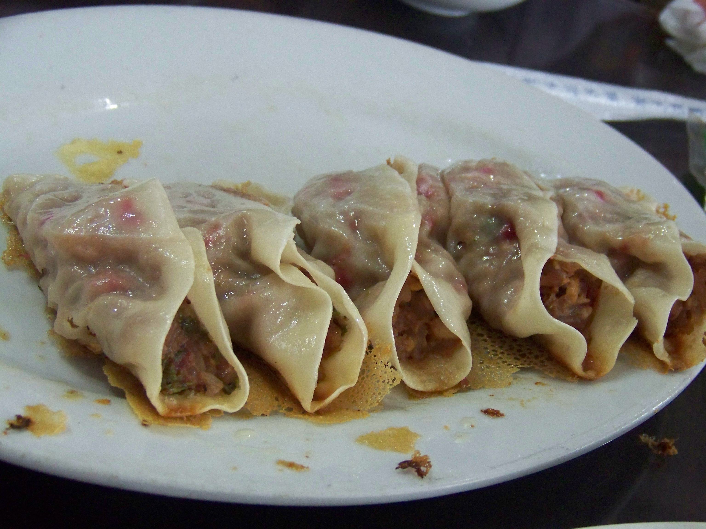
皮皮虾锅贴
比普通锅贴更海味，重点吃焦脆底和整只皮皮虾馅，适合安排在滨海新区那一天。
小满海鲜·皮皮虾锅贴王(福建北路店)
福建北路店适合国家海洋博物馆、航母乐园后前往；如果市区临时想吃，再搜鼓楼店。
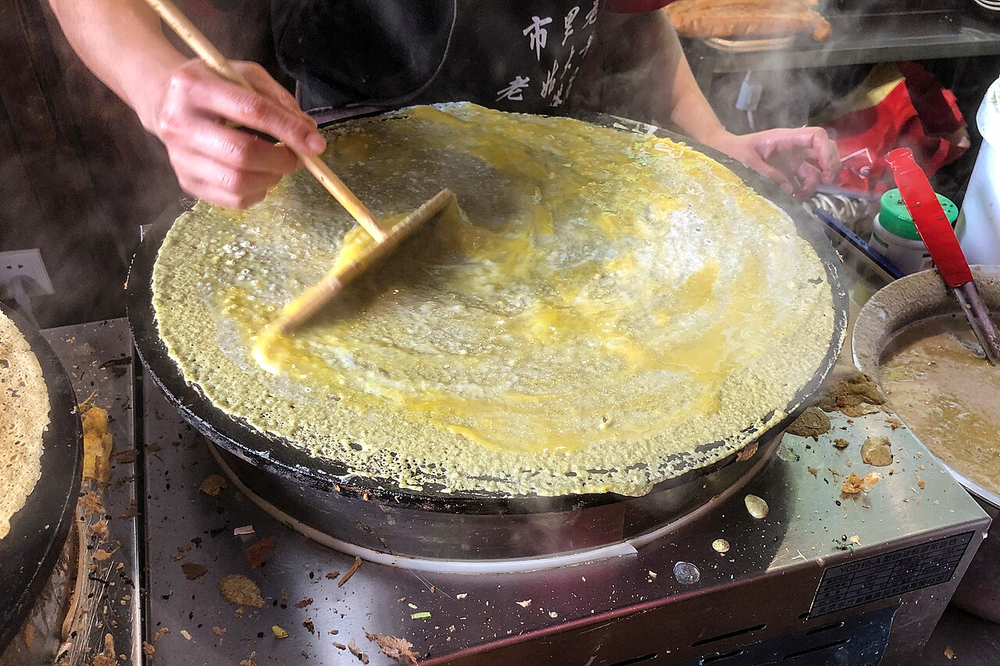
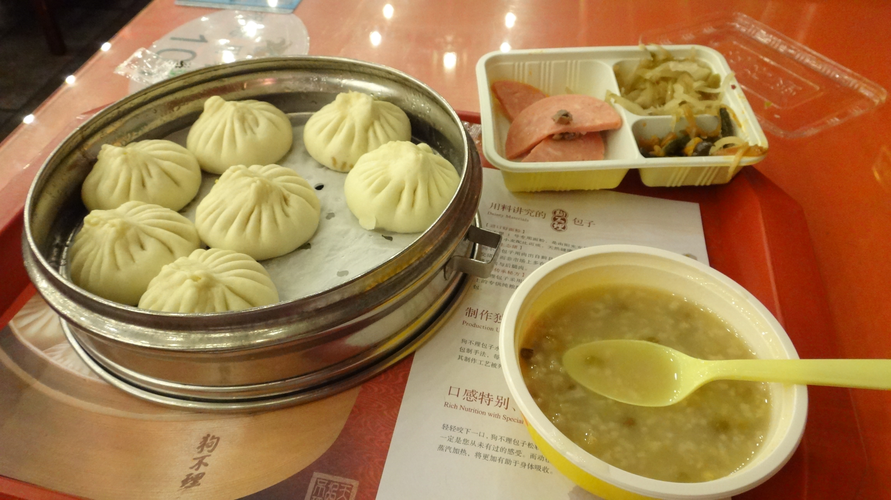
自驾注意：外地车进天津与尾号限行
- 高峰限行：工作日 7:00-9:00、16:00-19:00，外埠号牌机动车在外环线（不含）以内限行（北京号牌小型、微型载客汽车除外）。
- 尾号限行：工作日 7:00-19:00，本市及外埠号牌机动车在外环线（不含）以内按尾号轮换限行；机动车号牌尾号为英文字母的按 0 号管理。
- 通行凭证：外埠号牌小型、微型载客汽车（北京号牌除外）可申办高峰通行凭证，在指定时段进入外环线（不含）以内道路。
- 怎么办：微信搜索“天津公安民生服务平台”小程序，进入“小客车高峰预约”，登录后绑定车辆信息（号牌类型、车牌号、车辆类型、车辆识别代码），选择进中心城区日期和截止日期，提交后在“我的办件”里下载“小客车高峰预约凭证”。
- 什么时候办：不要等当天现办；常规口径是每天 23:00 前可预约下一个自然日及之后两天，入口开放时间以小程序公告为准。凭证免费，每次连续 7 个自然日；外省市小客车每年最多 12 次，天津区域指标车每年最多 24 次。
- 怎么用：电子凭证存在手机里备查即可；如果不方便出示电子版，再打印后放在前挡风玻璃明显处。注意凭证只解决早晚高峰通行，尾号限行日仍然无效。
- 特殊车辆：新能源车、执行任务特种车及通告列明车辆不受上述措施限制；载货汽车按货车专门限行规定执行。
| 轮换周期 | 周一 | 周二 | 周三 | 周四 | 周五 |
|---|---|---|---|---|---|
| 2026-03-30 至 2026-06-28 | 2 和 7 | 3 和 8 | 4 和 9 | 5 和 0 | 1 和 6 |
| 2026-06-29 至 2026-09-27 | 1 和 6 | 2 和 7 | 3 和 8 | 4 和 9 | 5 和 0 |
| 2026-09-28 至 2026-12-27 | 5 和 0 | 1 和 6 | 2 和 7 | 3 和 8 | 4 和 9 |
当前页面日期为 2026-05-23，属于第一轮换期；遇法定节假日放假调休而调整为上班的周六、周日，尾号和高峰限行通常不按工作日执行。出发前再核对天津公安交管最新通告与当日临时交通管控。
查看 2026 限行通告整理 查看高峰通行证办理指南04 · 火车与抵达
最推荐下午出发的 G680，抵达后正好吃晚饭
下午从合肥南走，傍晚到天津西，先打车吃利德顺，再入住酒店、看津湾广场和海河夜游，节奏最舒服。
最推荐
G680 合肥南 → 天津西
合肥南出发
14:12
→
天津西到达
18:30
全程约 4 小时 18 分。下午不赶早，傍晚到天津西，先打车去利德顺吃晚饭，再入住酒店，最后接津湾广场、解放桥和海河夜景。
打开 12306 查询早到备选
G1274 合肥南 → 天津西
合肥南出发
11:15
→
天津西到达
15:19
全程约 4 小时 04 分。适合想下午多留一点时间的人，放完行李还能多逛意风区或提前吃一顿津菜。
到得最早
G2554 合肥 → 天津南
合肥站出发
09:00
→
天津南到达
13:08
全程约 4 小时 08 分。到得早，但天津南离天津站酒店更远，适合想把 Day 1 下午行程拉满的人。
购票判断
- 默认首选 G680：下午出发、傍晚到天津西，先吃利德顺晚饭，再去酒店入住。
- 想早一点到天津，选 G1274；想中午后就到天津，选 G2554。
- 若坚持“天津站下车”，可把 T242/T243 作为备选，但它是次日凌晨到站，旅游体验不如白天高铁。
05 · 先定大本营
前两晚住市区，返程前住天津南站
这版动线不急着先回酒店：G680 到天津西后先打车去吃饭，再入住市区酒店；最后一晚换到天津南站旁，第二天早高铁更稳。
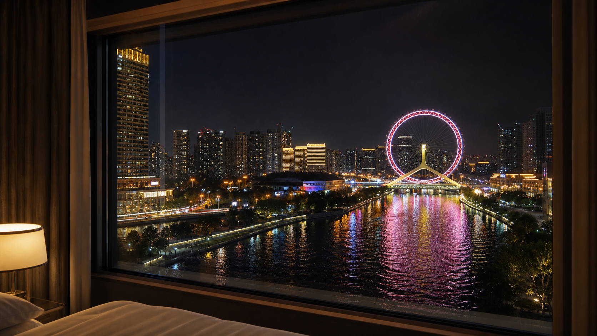
住宿核心
市区酒店靠天津站/津湾，景观备选 天津海河假日酒店
前两晚按“天津站、津湾广场、意风区步行舒服”来选双床房，预算先看 500 元左右。若更想把天津之眼夜景放进住宿体验，再看 天津海河假日酒店 高层、河景或摩天轮景观房型；最后一晚换到 天津南站鹏瑞利明宇丽雅酒店 ，步行到天津南站更省心。
订房关键词：双床 / 可取消 / 近天津站 / 近天津南站- 前两晚 天津站、津湾广场、意风区周边优先，方便早餐、步行看夜景和第二天市区行程。
- 第三晚 航母乐园玩完后住 滨海附近民宿 或公寓，减少当天 70 公里往返疲劳。 打开大众点评搜索滨海民宿
- 第四晚 住 天津南站鹏瑞利明宇丽雅酒店 ，第二天可选 07:29 的 G87 或 09:33 的 G981 去合肥南。
06 · 线路
按实际方位排五天线路，吃饭和住宿都顺路
这版把市区、滨海和返程分开；线路图已按大致地理方位重画，能看出天津西、市区、滨海和天津南的相对位置。
Day 1
18:30 天津西 · 利德顺晚饭 · 海河夜景
- 18:30：G680 到天津西后先打车约 1.2km 去 利德顺小老饭庄(复兴路店) ，第一顿直接吃牛窝骨和天津家常菜。
- 饭后：去市区酒店办理入住，优先天津站、津湾广场、意风区附近双床房。
- 晚上：顺着海河溜达到津湾广场、解放桥看灯光；体力够就从津湾码头或天津站码头坐海河夜游。
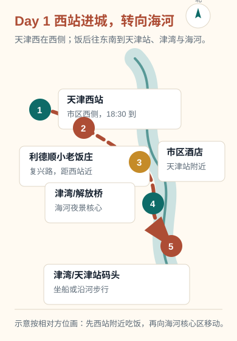
晚饭优先
夜景可散步可游船
Day 2
张记包子 · 意风区 · 五大道 · 相声夜场
- 早上：酒店附近吃 津门张记包子铺(丰业里店) ，三鲜包配粥最稳。
- 上午：步行去意大利风情街，慢看街区和老建筑。
- 中午：在意风区补天津小吃，少量尝 狗不理(天津·海河意式风情区店) 。
- 下午：去民园广场和五大道，看历史建筑、赏花、拍照。
- 晚上：到 桂园餐厅(五大道店) 吃八珍豆腐；饭后去预约好的德云社、葫芦相声社或古文化街相声馆。
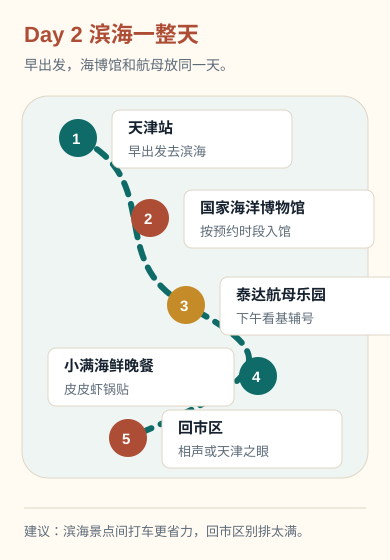
市区步行
相声提前订
Day 3
退房 · 亲友开车去滨海 · 泰达航母乐园
- 一早：市区酒店退房，亲友开车送去天津滨海新区，市区到泰达航母主题公园约 70km。
- 白天：泰达航母主题公园玩一整天，看航母、军事主题展演和园区活动。
- 晚上：节假日提前查是否有烟花秀；玩完后住 滨海附近民宿 或公寓，第二天去海博馆更轻松。
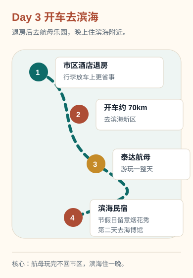
亲友接送
滨海住一晚
Day 4
国家海洋博物馆 · 回市区 · 罾蹦鲤鱼
- 上午：按预约时段去国家海洋博物馆，重点看“海上故宫”和大厅里那艘郑和纯木质舰模型。
- 下午：亲友从滨海接回天津市区，避开晚高峰会舒服很多。
- 晚上：去 红旗饭庄 吃罾蹦鲤鱼；饭后入住 天津南站鹏瑞利明宇丽雅酒店 。
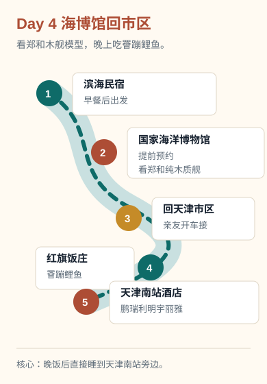
海博馆预约
返程酒店前置
Day 5
天津南站 · 07:29 / 09:33 回合肥南
- 住在天津南站旁边后，早上不用横穿市区，退房后直接进站。
- 早班：G87，天津南 07:29 发，约 10:54 到合肥南，适合想中午前回到合肥。
- 舒适班：G981，天津南 09:33 发，约 13:31 到合肥南，睡醒吃早餐再走更从容。
- 车次会随调图和日期变化，最终以 12306 当日售票页为准。
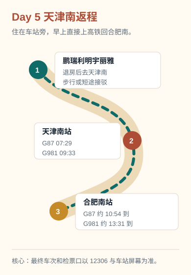
G87
G981
07 · 预算与预约
大致花费和预约顺序
价格会随节假日、天气和平台活动变化，下面按两人出行做保守估算。
| 项目 | 建议预算 | 说明 |
|---|---|---|
| 火车 | 以 12306 当日票价为准 | 去程最推荐 G680 到天津西，18:30 抵达后先去利德顺吃晚饭；返程看 G87 07:29 或 G981 09:33 从天津南到合肥南。 |
| 酒店 | 市区约 450 到 650 元/晚，天津南站按当日价格 | 前两晚住天津站/津湾附近，第三晚住滨海民宿，第四晚住 天津南站鹏瑞利明宇丽雅酒店 方便早高铁。 |
| 海河游船 | 夜景成人常见约 100 元/人 | 建议选津湾码头或天津站码头，19:30 后夜景更稳。 |
| 天津之眼 | 日夜票价不同 | 2026 年 4 月后公开报道显示日间、夜间票价有调整，购票以“天津之眼摩天轮”官方公众号为准。 |
| 滨海交通 | 亲友开车接送为主 | 市区到泰达航母主题公园约 70km，第三天直接住滨海，第四天下午再回市区。 |
| 高峰通行凭证 | 免费 | 亲友自驾若要在工作日 7:00-9:00 或 16:00-19:00 进入外环线以内，提前在微信“天津公安民生服务平台”小程序里办“小客车高峰预约”；先确认当天尾号不限行，再办高峰凭证。 |
| 正餐 | 约 80 到 180 元/人/顿 | 桂园餐厅、 红旗饭庄、 利德顺小老饭庄 分量大，双人点 2 到 3 个菜即可。 |
| 相声 | 按场次和座位浮动 | 德云社、葫芦相声社和古文化街茶馆建议提前 1 到 2 周，在微信/票务小程序里搜索名称在线预约，节假日更要早订。 |
预约顺序
- 先查火车：去程优先 G680；返程按 07:29 的 G87 或 09:33 的 G981 核对余票。
- 先订酒店：前两晚天津站/津湾，第三晚滨海民宿，第四晚天津南站旁。
- 再约国家海洋博物馆：普通展免费预约，但热门时段容易满，郑和纯木质舰模型安排在入馆后先看。
- 相声票提前 1 到 2 周预约：在微信/大麦/携程等小程序里搜索德云社天津、葫芦相声社、名流茶馆，可在线预约。
- 亲友开车进市区前一天看限行：如果要在早晚高峰进外环线以内，微信搜索“天津公安民生服务平台”办理“小客车高峰预约”；尾号限行日不要硬进，改避峰或打车。
- 航母乐园看节假日活动：若有烟花秀，第三晚住滨海会更舒服。
- 最后定海河游船：看当天天气，Day 1 晚上优先津湾码头或天津站码头。